I am an talented and enthusiastic web developer with over six years professional experience designing and implementing web interfaces for end-user portals, online stores, and professional services scheduling apps. I have delivered projects for industry leading and globally recognized brands such as Nest, Whirlpool, and Icon Fitness.
I love learning new technologies and techniques, and finding creative solutions to unique problems. But most of all, I love building great UI's and web-apps that put the user first. I have extensive experience with traditional front-End technologies like HTML, CSS, JavaScript, jQuery, and Bootstrap, and I am well adapted to learning new technologies and techniques for the success of the project.
Technical Strengths
-
HTML5
-
CSS3
-
JavaScript ES5/6
-
jQuery
-
Ajax
-
Bootstrap
-
Liquid templating
-
Responsive Design
-
Cross-browser implementation
Work Experience
Registria Inc
December 2010 - September 2015 Front-End Web Developer Palo Alto, CA- Designed and developed web-site interfaces
- Designed and developed online marketing strategies and campaigns
- Designed and developed custom web forms
- Designed and created custom web graphics
- Provided service and support for end-users
- Provided guidance to less-experienced developers
- Communicated with clients to gather requirements and estimate work
Hart Computer Technology
July 2010 - April 2011 Lead Web Developer & Lead Technician Idaho Falls, ID- Designed, implemented, and managed commercial computer systems and networks
- Designed and developed web sites using Drupal and CMS Made Simple
- Designed and created custom web graphics
- Created custom templates and modules for Drupal and CMS Made Simple
Self Employment
December 2009 - July 2010 Web Designer & Developer Stillwater, OK- Designed and developed web UI elements
- Developed sites using Drupal and CMS Made Simple
- Created templates and modules for Drupal and CMS Made Simple
- Designed and created custom web graphics
Examples of Work Screenshots available at bcartmell.online
-
Motili contractor portal contractors.motili.com
-
June, 2014
A professional services scheduling app to facilitate nation-wide repairs of managed residential properties. This portal presented a number of challenges in managing complex data-structures and working with the Registria Platform in unusual ways. This portal makes heavy use of Ajax requests to provide a lot of dynamic loading and submission of data. This portal is esponsive and supports all modern browsers on destkop and mobile devices. The Motili Contractor Portal makes heavy use of Ajax and jQuery to provide dynamic behaviors.


-
Nest Certified Installer Finder certified.registriastaging.com/certified_finder *
-
July, 2013
Professional services scheduling build on Angular 1.0 The Nest Insteller finder integrated with data from the Nest Installer portal to help end-users find a certified installer for a new or pre-purchased Nest Learning Thermostat. this was my first Angular project and worked in two languages (English and French). It was coded by me from scratch to be a perfect-pixel match of mock-ups provided by Nest on both desktop and mobile devices. The Nest Installer finder also makes heavy use of Ajax and jQuery to provide dynamic behaviors.
* Staging link -- implementation is no longer live


-
Nest Certified Professional portal certified.registriastaging.com *
-
May, 2013
The Nest Installer Portal served as the primary point-of-contact between Nest and Nest Certified installers. It facilitated the ability for certified installers to view, accept, and track install requests; order thermostats, apperal, and marketing materials; provided training and certification; tracked installer ratings; and implemented a custom currency (Nest Points). I coded the portal UI from scratch pixel-perfect to mockups and style guidlines provided by Nest. The portal supported both English and French, makes heavy use of Ajax and jQuery, is responsive and supports all modern browsers on desktop and mobile devices.
We actually implemented two version of the Nest Certified Portal. Shown here is the second. The first was launched in May, 2012 it's homepage can be viewed at certified-old.registriastaging.com
* Staging link -- implementation is no longer live
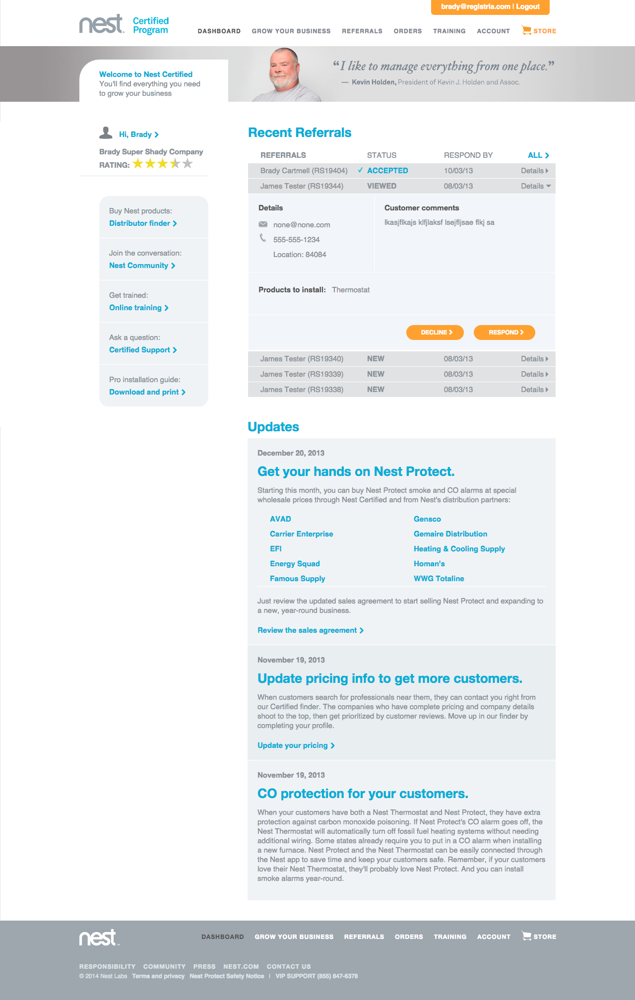
-
Whirlpool Swash registration portal register.swash.com
-
September, 2014
A simple non-persistent (users don't get a login) product registration site. The exiting thing about this project is that it support Photoregister®, a system developed at registria that retreives product model and serial number info from a photo of a sticker that the consumer texts to are system (much easier to use than a QR code and doesn't require an extra app).


-
Bushnell registration Portal bushnell.registria.com
-
June, 2014
A relaunch of the product registration portal for Bushnell Outdoor Products that also provides an ecommerce store width special discounts for registered users. This portal was designed and coded by me. After completion this implementation was used as a base template for other Bushnell brands Tasco, Simmons, Serengeti and Millet. It features a very simple and easy-to-use interface and is built on the Gumby CSS framework. (Because Bootstrap was a little heavy for what we needed here)


-
Hunter Fan registration portal register.hunterfan.com
-
January, 2015
A simple non-persistent (users don't get a login) product registration site. The exiting thing about this project is that it support Photoregister®, a system developed at registria that retreives product model and serial number info from a photo of a sticker that the consumer texts to are system (much easier to use than a QR code and doesn't require an extra app).


-
Icon Fitness multi-brand registration portal
my.iconfitness.com — my.nordictrack.com — my.proform.com — my.freemotionfitness.com -
November, 2014
Multi-brand product registration and e-comerce portal for several brands in the Icon Fitness and other brands in the Icon family: NordicTrack, Proform Fitness, and Freemotion Fitness. This project was fun and challenging as all brands share the same implementation. A liquid tag adds a class to the body tag which CSS uses to change styling. This technique is also used to restrict registerable products as well as the products displayed on a users 'My Products' page.
Another challenge of the Icon Fitness portal was managing complex requirements for extended warranty offerings including sku's, pricing structures, and warranty term that change during the product life-cycle as part of a data-driven marketing program.
This portal also makes heavy use of Ajax requests and jQuery to provide dynamic behaviors and features my own custom-built, full-featured auto-complete feature named Frauto-complete for product and address information. The Icon fitness portal also makes heavy use of Ajax and jQuery to provide dynamic behaviors, is responsive, and supports all modern browsers on desktop and mobile devices.
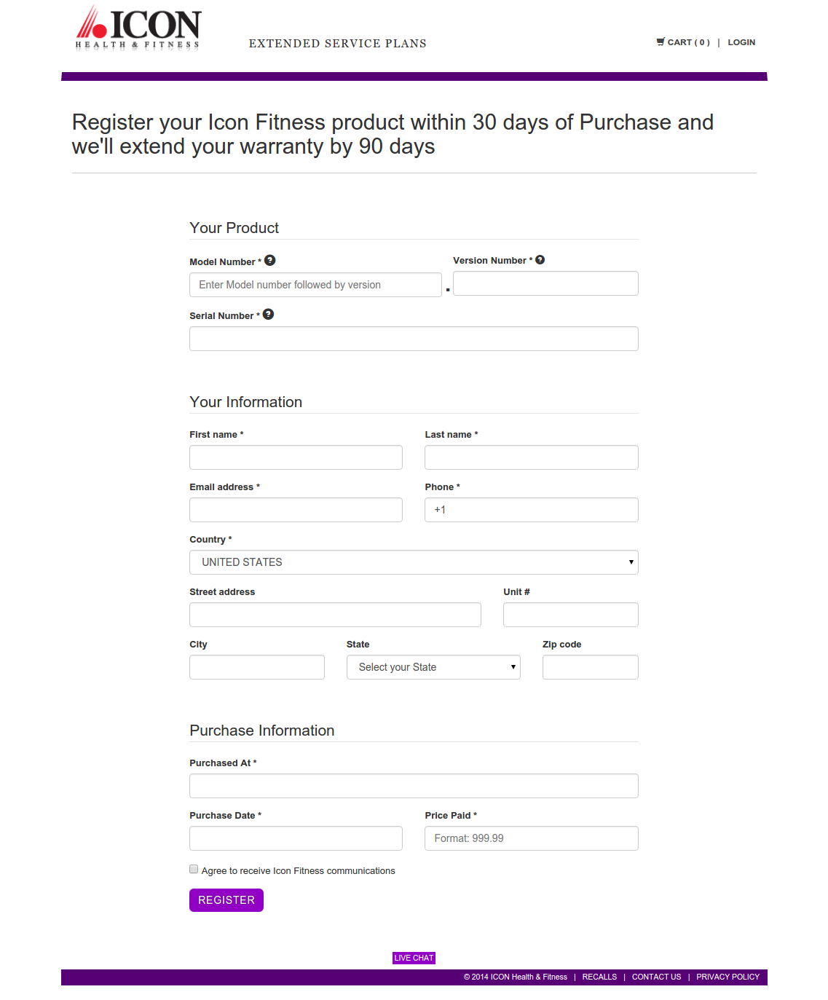 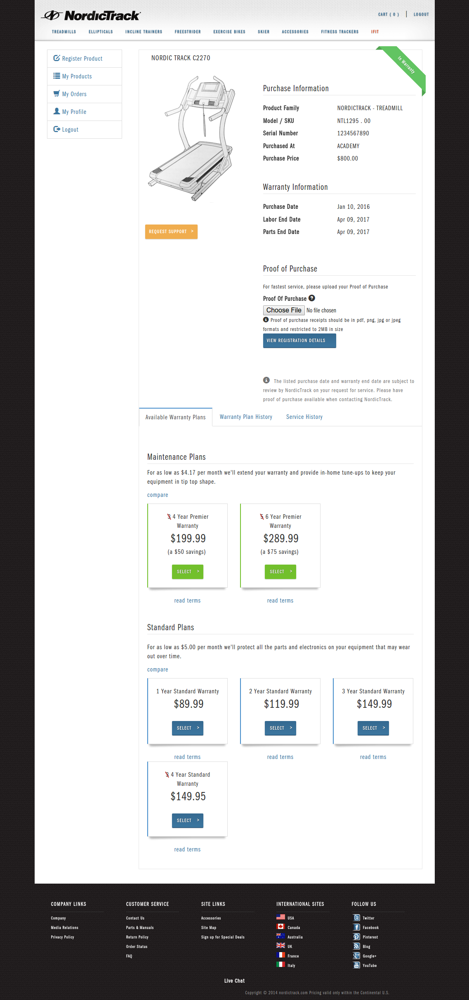
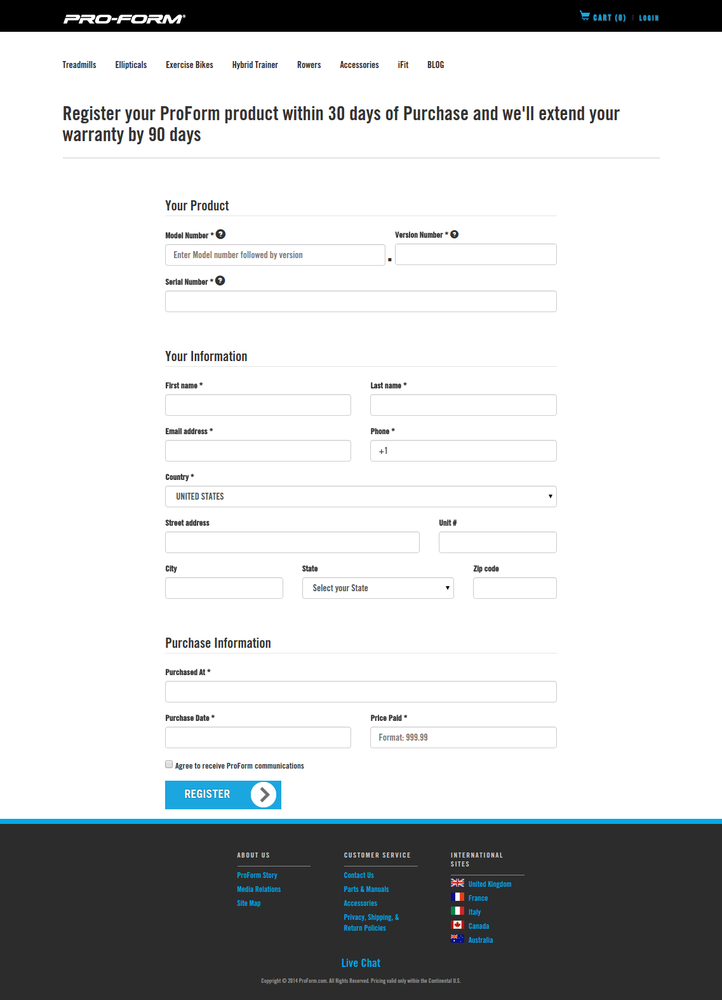
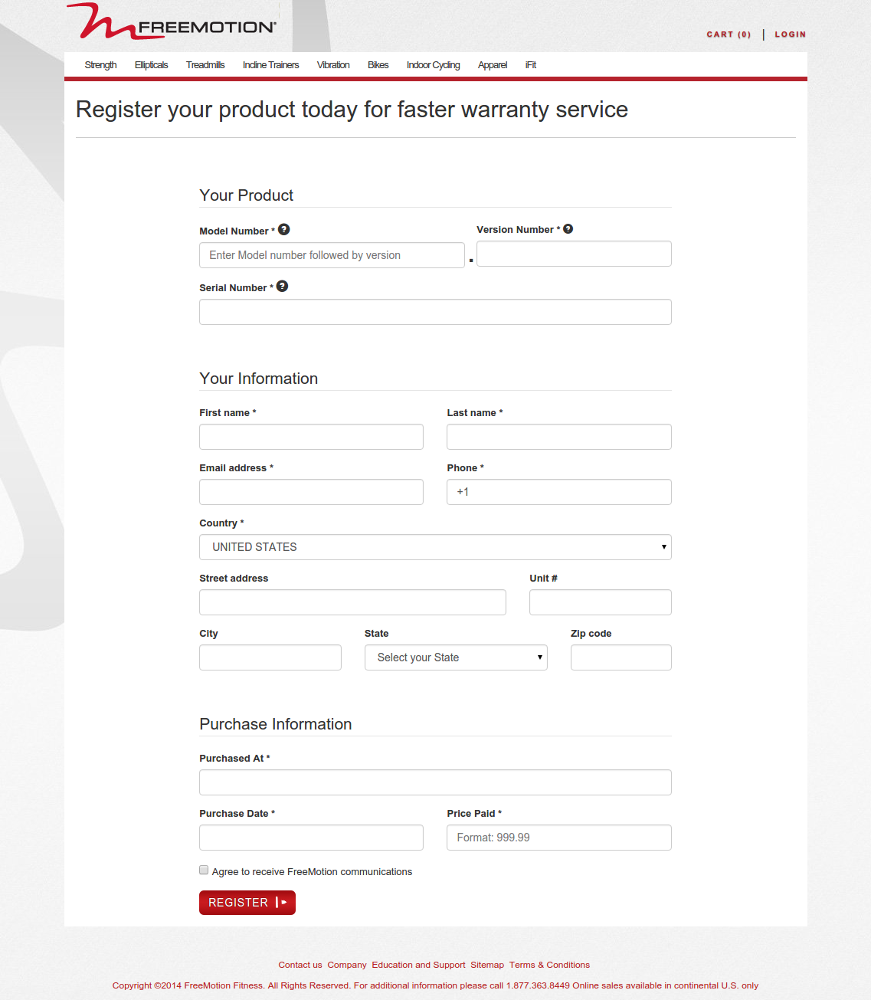
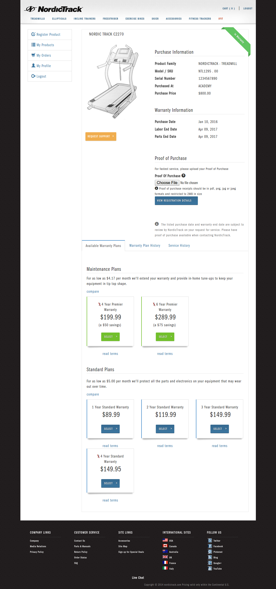
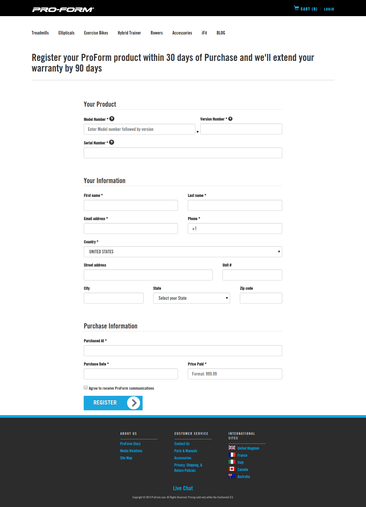
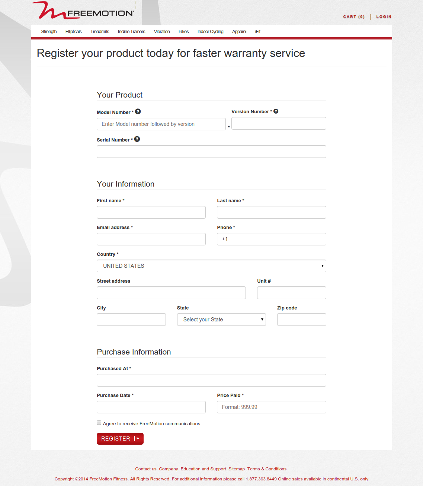
-
Ferguson Crest Winery online store fergusoncrest.com
-
December, 2012
The primary public-facing site and eCommerce store for the Ferguson Crest winery, the winery that Fergy and her fatheer opened together. This site was built according to mockups provided by Ferguson Crest. It also included some advanced image manipulation for bottles depicted on the store pages and on the home page as not all of the bottles had labels at the time of the store build.


-
Astro Gaming support portal support.astrogaming.com
-
July, 2011
A relaunch of the product registration, support, and private store for Astro Gaming customers. Built to match the style of Astro's newly relaunched main site at the time of build. This portal included some fun features to build such a dynamic mega-menu and many different variation of each product which lead to complex sku selection based on many factors.


-
Bushnell BackTrack DTOUR GPS registration portal backtrackdtour.com
-
April, 2011
A product registration and app distribution portal for Bushnell's BackTrack DTOUR GPS device which supports translations for five different languages. This was one of my early projects with Registria, and the first one that I had the pleasure of designing myself. It has since been reimplemented in several variations as new variations (HuntTrack, and FishTrack) have been released.
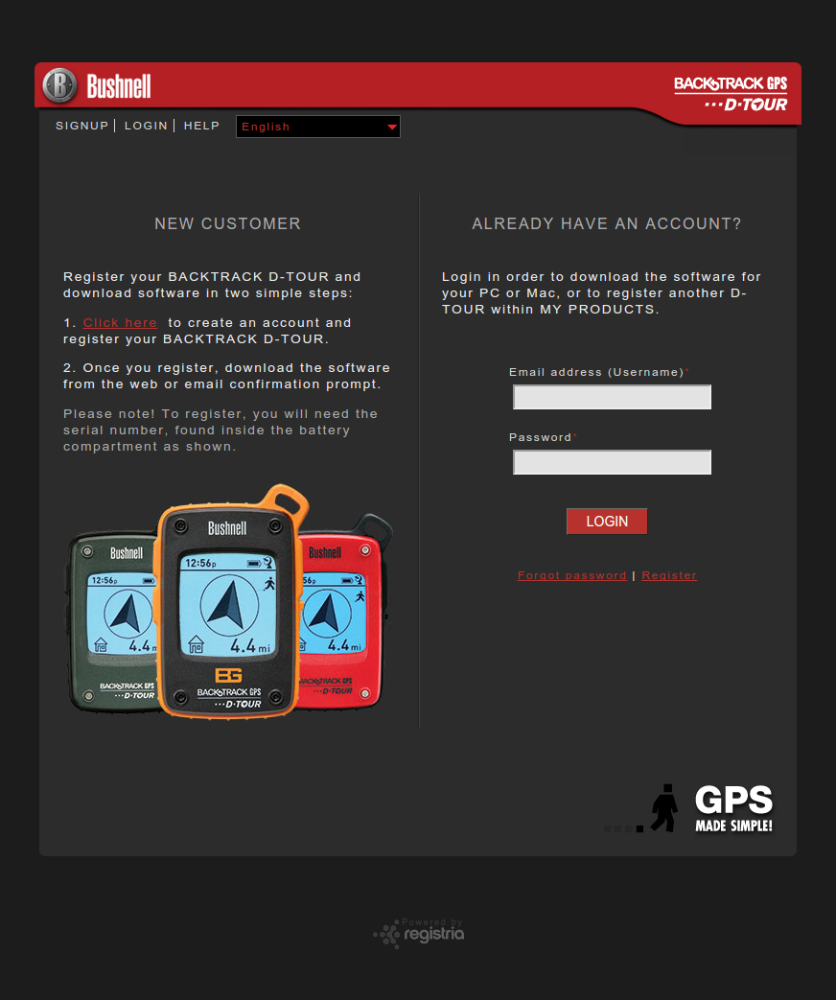 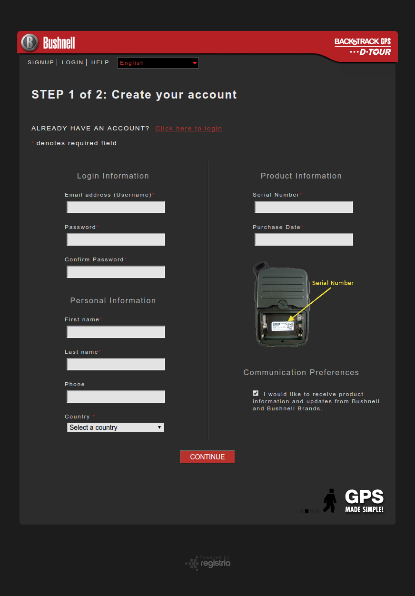 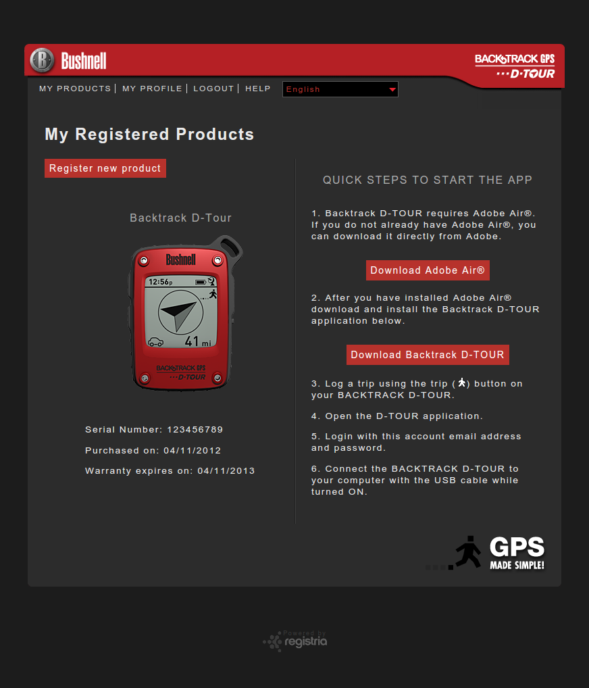 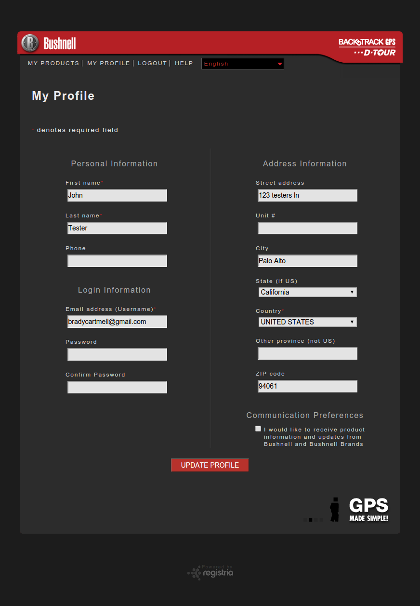 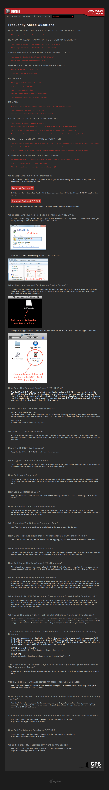